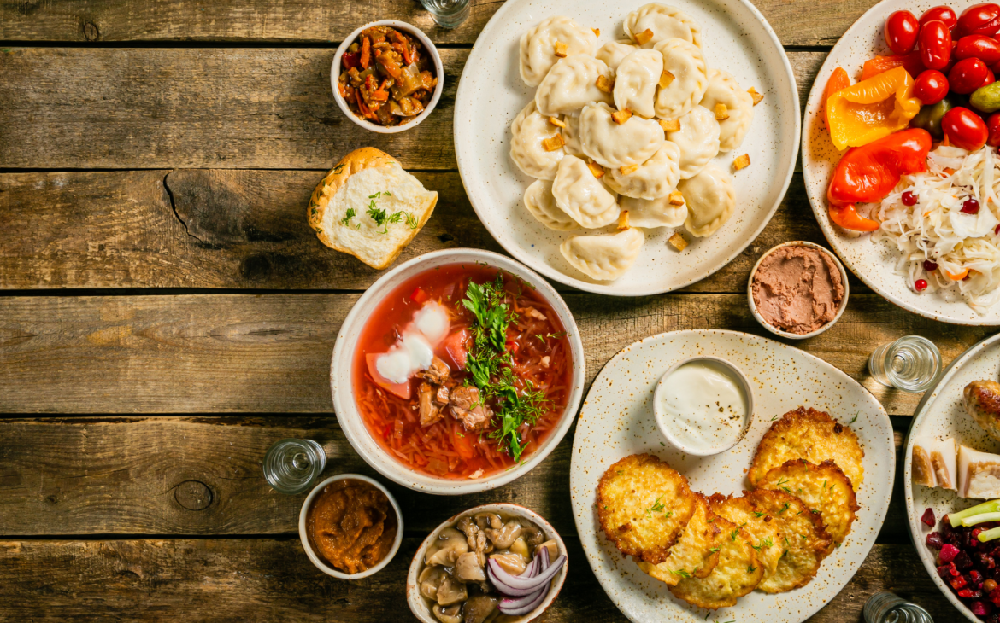

A culinary experience inspired by the owner's childhood in a region of Ukraine with the richest agricultural soil in the world, known as Chernozem.
Enjoy a range of hearty meals such as the Ukrainian Borsch or the meat-filled dumplings called Pelmeni. Treat yourself and nourish the body and soul with this home cooked food.